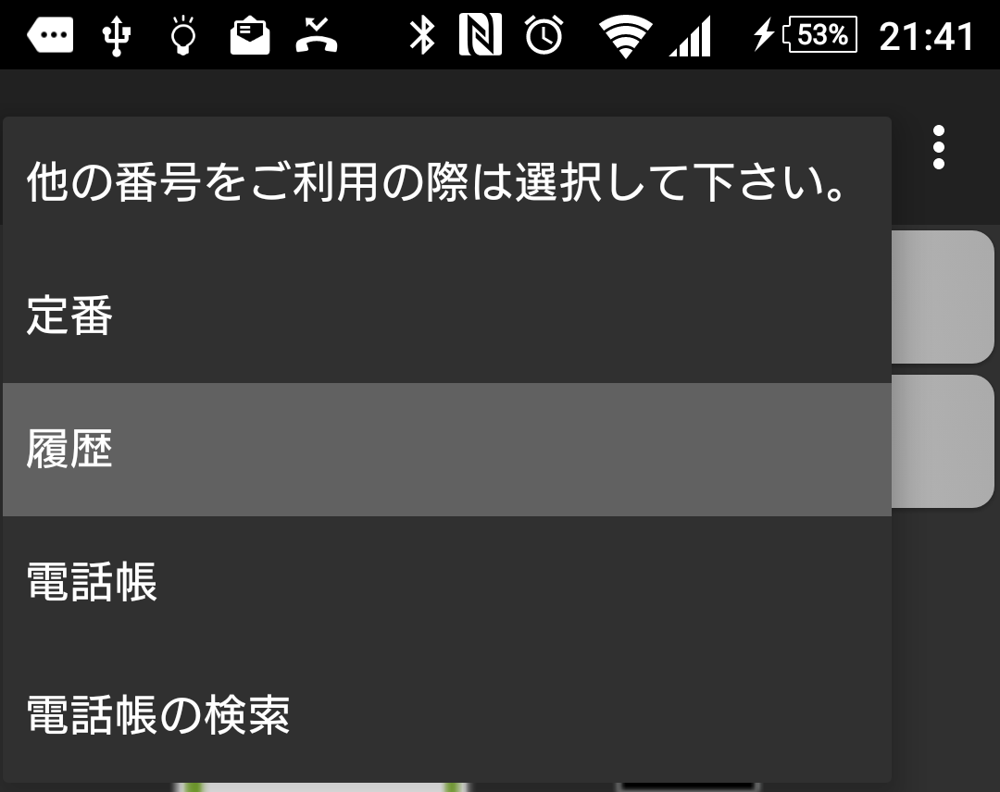
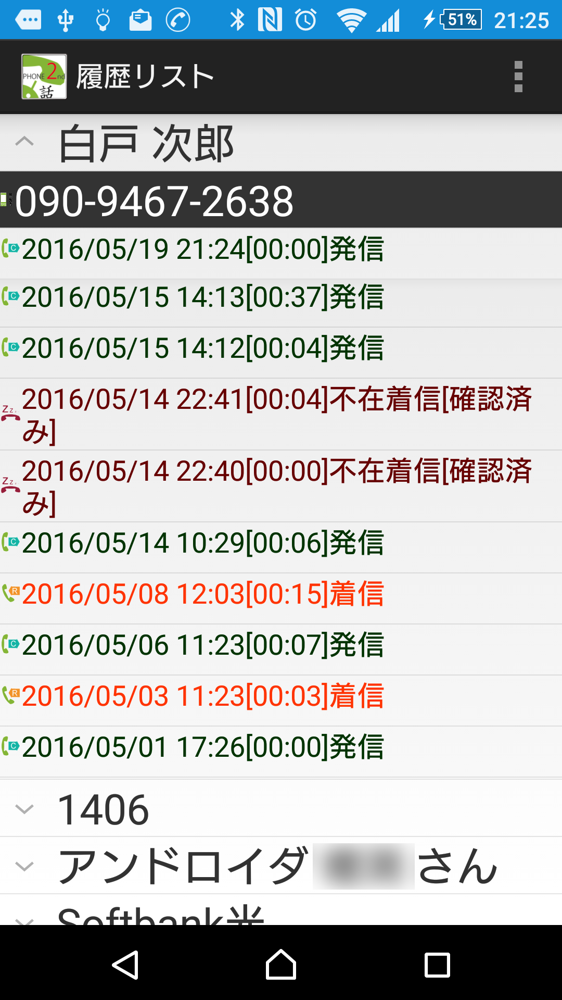
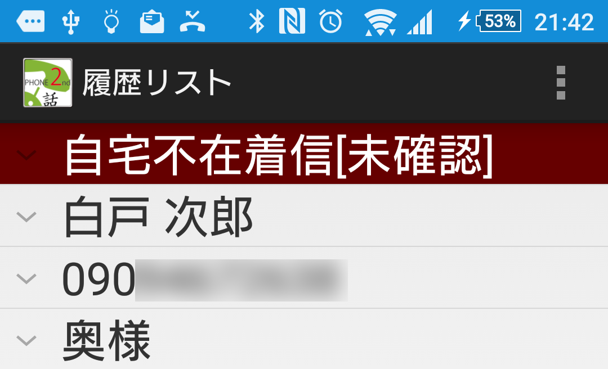

How to use
|



|
| . |
I open the child list if involved in the part of the name and display a history list of the.
|
Contents on the list
|
| . |
-
It is a phone number of the partner whom the first line was used for in these days.
-
Is a history after the second line; the contents of each line
-
Outbreak time for history record
-
Call time (by the absence receipt rumbling time for receipt)
-
Division of the receipt, the absent receipt from the dispatch, partner from you.
-
Did you confirm that there was the absent receipt in the case of the absence receipt?
It becomes the breakdown.
|
Touch of the list of children
|
| . |
Even if the list of children touches it anywhere, I take a phone number in the first bank home to a dispatch screen.
-
I display the latest history information that there was on a dispatch button in the second line of the list of children when I come back from "a history" to "a dispatch screen".
|
Long touch of the list of children
|
| . |
I made that I could do it here a menu.
- Making of the new telephone book
I make a new telephone book from a phone number recorded in a history.
-
Because I do the setting dialogue of the name, the telephone book that the phone number that there was was filled in is added to the name and a history if I input the name and tap an "additional" button.
-
I add it to an existing telephone book
I add a phone number recorded in a history to the telephone book which
I have already made.
-
I display the dialogue that listed indication names. I open the telephone book of the one if I select who it is and add the phone number that was in the history.
All transfer the date and time and the situation of incoming and outgoing calls in accord with a history to an event.
|